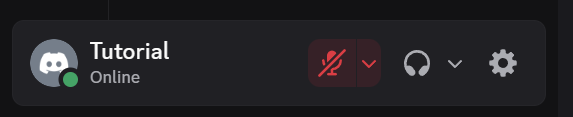
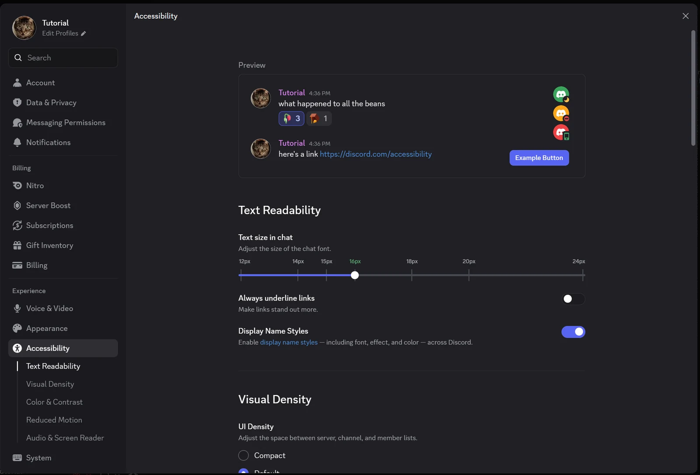

2.3 Setting Up Your Profile and Comfort Settings
An avatar and pronouns help your group recognize you, and comfort settings make Discord easier to read. All three tasks on this page start in User Settings.
Open User Settings
- Find your name at the bottom-left corner of the Discord window.
Image, Gif or Video will go here
Figure 2.3.1 - Click the gear icon to the right of your name.

Figure 2.3.2: The user panel at the bottom left, with the gear icon to the right of the microphone and headphone buttons
Result: The User Settings menu opens, with a list of options on the left. Press Esc at any time to close it.
Adding an Avatar and Pronouns
Your avatar appears next to every message you send. A clear photo of your face or a simple image helps teammates match your messages to you. Adding your pronouns helps teammates know how to refer to you.
- In User Settings, click Edit Profiles.
Image, Gif or Video will go here
Figure 2.3.3 - Click on your Avatar, and then click the Change Avatar button.
Image, Gif or Video will go here
Figure 2.3.4 - Click Upload Image.
Image, Gif or Video will go here
Figure 2.3.5 - Choose a picture from your computer.
Image, Gif or Video will go here
Figure 2.3.6 - Drag the picture or use the buttons below to adjust the crop.
Image, Gif or Video will go here
Figure 2.3.7 - Click Apply.
Image, Gif or Video will go here
Figure 2.3.8 - Click Save Changes at the bottom of the window.
Image, Gif or Video will go here
Figure 2.3.9 - Click the area that says Add pronouns, next to your username.
Image, Gif or Video will go here
Figure 2.3.10 - Type your preferred pronouns, such as He/Him.
Image, Gif or Video will go here
Figure 2.3.11 - Click Save Changes.
Image, Gif or Video will go here
Figure 2.3.12
Result: Your new picture appears in the bottom-left corner next to your name, and your pronouns appear on your profile card.
Change the display language
You can switch every menu and button in Discord to another language, such as Spanish. Messages from your group stay in the language they were written in.
- In User Settings, scroll down and click Language & Time.
Image, Gif or Video will go here
Figure 2.3.13 - Click the language you want, such as Español, LATAM.
Image, Gif or Video will go here
Figure 2.3.14
Result: Discord changes language right away. No restart is needed.
Make text larger
- In User Settings, click Accessibility.
Image, Gif or Video will go here
Figure 2.3.15 - Under Text Readability, find Text size in chat.

Figure 2.3.16: The Text size in chat slider under Text Readability in the Accessibility settings - Drag the slider to the right until messages are comfortable to read.
Image, Gif or Video will go here
Figure 2.3.17
Result: Messages in every channel use the larger size.